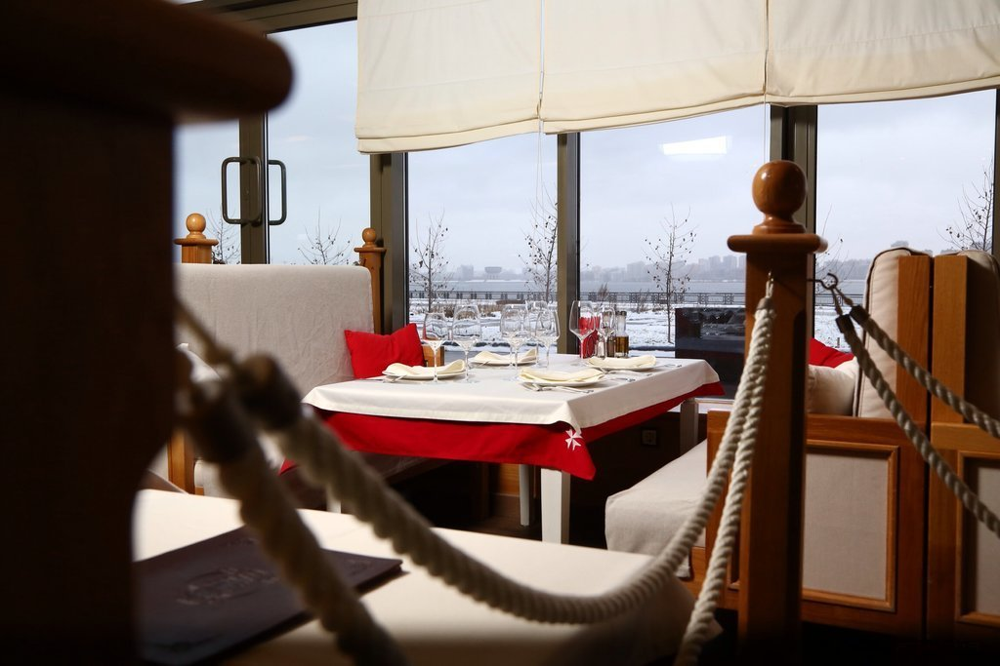
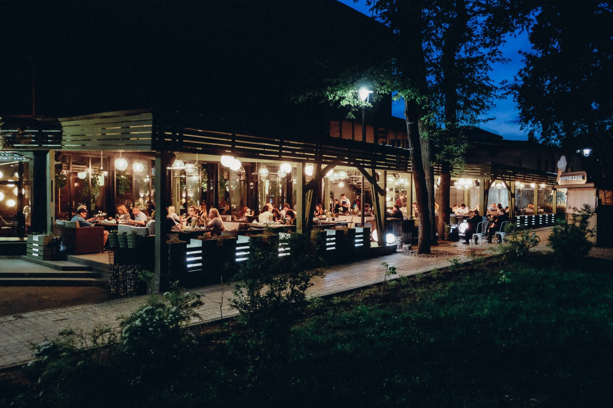
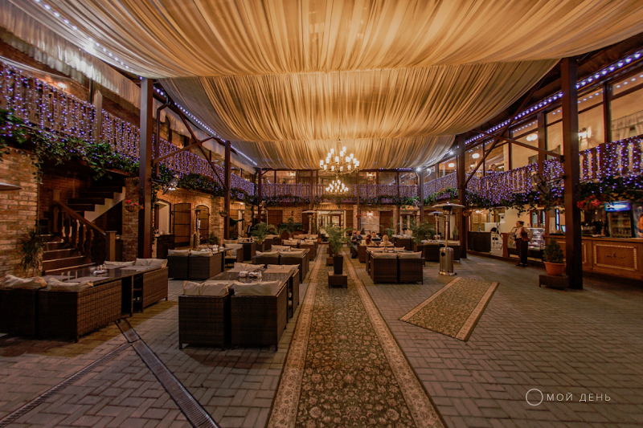
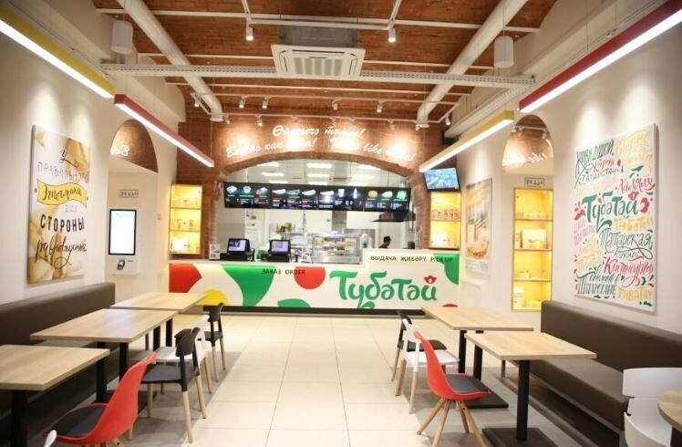

Дорогой рыбный ресторан с видом на воду. Ресторан международной сети Porto maltese вольготно расположился на верхнем этаже жилого комплекса «Европейский», с которого открывается вид на казанский uptown — правый берег Казанки. Основал его сербский бизнесмен Драган Ристич (среди персонала много его земляков). Основные блюда — от барабульки до солнечника — нужно выбирать на рыбном пульте. Вариантов приготовления восемь: на гриле, лешо, в морской соли, на бумаге, в духовке, а-ля ауле, на сковороде, в фольге. Находится: Казань, Подлужная, 17
Кухня от Рустама Рахимова и танцы в Лядском саду «Марусовка» заработала на месте городского кафе «Театральное» в Доме актера на Щапова. В меню — избранное из русской, европейской и паназиатской кухонь, отчего создается легкий, но не вызывающий раздражения беспорядок. Форшмак из дальневосточной сельди, к примеру, делит страницу с баклажанами по-сычуаньски и ростбифом с крем-соусом из тунца, ризотто с белыми грибами напомнит своей консистенцией блюдо из Тосканы, а курица кунг пао во всем хочет походить на свою родственницу с шанхайского рынка. Запивать сиё географическое буйство предлагается приличным вином и коктейлями. Верность слогану «Бар, еда, тусовка» выражается в том, что начиная с четверга в «Марусовка» играют казанские музыканты и ставят музыку диджеи. Находится: Казань, Щапова, 37
Настоящая татарская экзотика на набережной «Татарская усадьба» называется гостинично-ресторанным комплексом: здесь можно снять номер, накупить сувениров и сладостей и представлять себя местным зажиточным купцом, благо дом принадлежал именно такому персонажу — Хамиту Сабитову, торговавшему мануфактурными товарами и азиатскими головными уборами. Здесь в начале прошлого века в «Восточном клубе» несколько лет собиралась национальная интеллигенция, а потом — солдаты 1-го мусульманского социалистического полка.. Если и погружаться в татарскую экзотику, то здесь: «Усадьба» находится на туристической набережной Марджани с деревянными домами и несколькими мечетями вокруг. Даже салаты тут подают с кониной, а шурпу с бараниной готовят, как положено, в печи. Впрочем, есть и вездесущие европейские салаты с названиями типа «Загадка моря», суп из тыквы и прочий космополитизм. Находится: Казань, Шигабутдина Марджани, 8
Рестораны быстрого питания национальной татарской кухни. Личный мой выбор. Всем советую там побывать. Национальная замена МакДака ( да и его приемника). Татарский фасфуд. Быстрое обслуживание, чисто, уютно, есть игровая комната для детей. Вкусная татарская выпечка. Находится: Ул. Баумана, 47. Ул. Кремлевская, 21. Проспект Ямашева, 46/33 Park House, этаж 2
